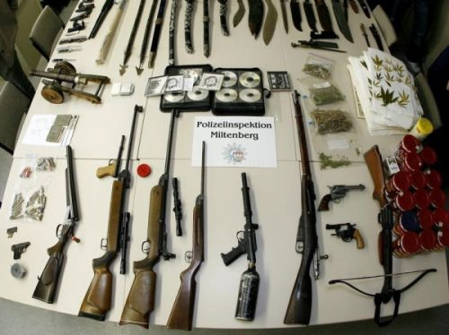

An dieser Stelle möchten wir auf eine neue politische Gruppe am bayerischen Untermain aufmerksam machen. Nachdem in Miltenberg lange Zeit nix los war und sogar die Jui geschlossen wurde, regt sich nun Widerstand gegen repressive gesellschaftliche Zustände:
Die Rufe nach einem Autonomen Jugendzentrum welches für alle da ist und unter Selbstverwaltung steht werden immer lauter. Wir denken an einen Raum, ein kleines Haus oder Lagerhalle die, die Jugendlichen herrichten und als Jugendtreff einrichten können, unabhängig von Stadtverwaltung und Polizei die offensichtlich keinerlei Jugendinteressen vertreten. Die „alte“ Jui sehen wir tatsächlich als gescheitertes Projekt an, woran unserer Meinung sowohl die Stadt als auch die Leitung schuld trägt. Eine Jugendinitiative die jeden ihrer Schritte mit einer konservativen Stadtverwaltung absprechen muss ist wahrlich keine Initiative mehr. Es ist an der Zeit für einen neuen unabhängigen Jugendtreff.
Autonome Gruppe Miltenberg
10.Jannuar 2009: Auch in Aschaffenburg konnten es sich etwa 100 Menschen nicht verkneifen, ihre Meinung zum aktuellen Konflikt zwischen Hamas und Israel Kund zu tun. Dabei kam es erfreulicherweise nicht zu antisemitischen Ausfällen, wie sie bei anderen „Friedens“demonstrationen in letzter Zeit leider an der Tagesordnung sind. Ein Bericht dazu ist auf kommunal.blogsport.de erschienen.
Zur Aschaffenburger Kundgebung gegen den Krieg im Nahen Osten finden sich auf kommunal ein Beitrag der AGA sowie einige Fotos. Es handelt sich dabei um den Anhang zu den 22 Anmerkungen zu Israel und Palästina.
Da wir uns der Brisanz des Themas bewußt sind, verweisen wir auf die Möglichkeit der Reaktion durch die Kommentarfunktion oder per Email: info-buero@web.de
In der Unterführung an der City Galerie sieht es anders aus, dort tobte sich die „Kauft nicht bei Juden“-Fraktion aus. Wobei im Eifer des Gefechts auch noch was schief ging:

In Aschaffenburg versammelten sich am Abend des 10. Dezember etwa 20 Leute um gegen Polizeigewalt in Griechenland und an jedem Ort zu demonstrieren. Am Herstallturm wurde die erste Kundgebung abgehalten, mit 2 Transparenten ging es anschließend durch Herstallstraße und Steingasse zum Weihnachtsmarkt, wo nochmal 2 Kundgebungen abgehalten wurden. In den Redebeiträgen und den verteilten Flyern wurde Bezug zu den Ereignissen in Griechenland sowie zum Tod von Oury Jalloh in einer Polizeizelle in Dessau genommen.
In Frankfurt und Würzburg gab es weitere Aktionen. In Griechenland selbst geht der Aufstand jetzt erst richtig los: Arbeiter besetzten die Gewerkschaftszentrale in Athen, über 600 Schulen sind noch immer besetzt, ebenso zahlreiche Universitäten.
Zur voranschreitenden Selbstorganisation der Arbeiter wurde eine Erklärung eben dieser auf der Website der FAU-IAA veröffentlicht.
Bei einer Hausdurchsuchung am 11.November in Miltenberg, stellte die Polizei bei einem 40-Jährigen zahlreiche Waffen, indizierte CDs mit rechtsradikaler Musik sowie Betäubungsmittel sicher. Bei den Waffen handelt es sich um eine abgesägte, doppelläufige Schrotflinte, eine Pistole, eine schussfähige Miniatur-Schwarzpulverkanone, Luftdruck-Waffen sowie zahlreiche Messer und Klingenwaffen.
Solche Funde bei Personen, die mit der rechten Szene sympatisieren, sind im Raum Miltenberg/Aschaffenburg leider keine Seltenheit. Bereits 2006 erschien zu diesem Thema ein Artikel auf indymedia: „Die Waffen der braunen Kameraden“
Bild der Beschlagnahmten Objekte
Unter diesem Titel ist auf indymedia ein Artikel zu den Aktivitäten des „Aktionsbüro Untermain“ erschienen.
Neues aus der Provinz: In den letzten Monaten ist eine verstärkte Zusammenarbeit zwischen dem „Aktionsbüro Untermain“/NPD KV „Spessart-Untermain“ und der hesssischen Naziszene zu beobachten. Der NPD-Wahlkampf zu den bayerischen Landtagswahlen wurde aus Hessen unterstützt, im Gegenzug übernahmen Nazis aus dem Aschaffenburger Raum wichtige Aufgaben bei Nazidemonstrationen am 11. Oktober in Wetzlar und am 8. November in Fulda.
Zu dem Artikel geht es hier.
Noch eine interessante Neuigkeit aus dem Artikel:
Neuer NPD Kreisverband gegründet
Am Freitag, dem 7.11.2008, gründete die Truppe um Pascal Scholz einen neuen NPD Kreisverband (KV) “Aschaffenburg – Miltenberg”. Schon während des Wahlkampfes kam es zu Meinungsverschiedenheiten und Abstimmungsroblemen zwischen „Spessart“ und „Untermain“. Die, für die NPD, enttäuschenden Wahlergebnisse dürften der Einigkeit ebenfalls nicht förderlich gewesenen sein, so dass diese Entwicklung abzusehen war.
Wie uns Augenzeugen mitteilten, versammelten sich am Abend des 18. Oktobers etwa 20 Nazis auf dem Winzerplatz in Klingenberg. Zuvor wurden die Nazis offenbar aus einer Gaststätte verwiesen. Ein Großaufgebot an Polizei (ca. 15 Wannen) kontrollierte die Ansammlung. Wir hoffen euch bald etwas zu den Hintergründen des Nazitreffens berichten zu können.
Aktualisierung:
Lokale Nazis mieteten den Grillplatz in Röllbach um dort eine Feier zu veranstalten. Um diversen Gerüchten gleich mal vorzugreifen: Es fand dort definitiv kein Konzert statt.
Bereits am frühen Nachmittag war auffällig viel Polizei in der kleinen Gemeinde Unterwegs. Beobachtern zufolge hielten sich zu diesem Zeitpunkt etwa 10-15 Nazis am Grillplatz auf, um Vorbereitungen für den Abend zu treffen.
Bei den Nazis die sich in Klingenberg versammelten, handelte es sich um eine auswärtige, dem Akzent nach wohl aus dem tiefsten Bayern stammende, ca. 15 Personen zählende Gruppe. Die Polizei sorgte dann warscheinlich dafür, dass sie zur Feier gelangten. Denn am nächsten Morgen reisten sie mit dem Zug vom Klingenberger Bahnhof ab, machten am Würzburger Bahnhof dann Bekanntschaft mit einer St.Pauli-Fantruppe und verpassten dadurch ihren Anschlusszug. Am Grillplatz selbst fanden sich mindestens 50 Nazis ein.
UPDATE: Nach angaben der Nazis wurde die Feier auf dem Röllbacher Grillplatz von der Polizei aufgelöst
Organisiert wurde die Veranstaltung wohl von örtlichen NPD- und Kameradschaftsstrukturen. Das ganze erinnert an Nazifeiern, die vor einigen Jahren des öfteren in Mömlinger Steinbruch stattfanden.
Wie zu erwarten war, schweigt die Polizei die Naziaktivitäten mal wieder Tot. Es erschien trotz des Einsatzes von Bereitschaftspolizei aus Würzburg keine Pressemitteilung, was auch viele verunsicherte Anwohner verärgerte.
04.10.: Nachttanzdemo meets „Ball der Polizei“
Ziel war es, nach der von der Polizei ausgelösten Randale von Donnerstagabend, bei diesem erneuten Zusammentreffen mehrerer hundert Polizist_innen durch frühzeitiges Eingreifen einen erneuten Gewaltexzess zu verhindern. Passanten wurden mit Flugblättern über die polizeilichen Übergriffe auf die Nachttanzdemo informiert. Deutlich wurde, warum nach dem Gewaltexzess vom Donnerstag eine erneute Zusammenkunft der Frankfurter Polizei zwingend zu unterbinden sei.
Sammelartikel auf Indymedia
Unter dem Motto „Deutschland den Schlaf rauben! Die Verhältnisse zum Tanzen bringen!“ versammelten sich am Abend des 2. Oktobers etwa 1000 Menschen vor dem Frankfurter Südbahnhof zur Nachttanzdemo 2008. Bereits im Vorfeld gab es harte politische Auseinandersetzungen mit dem städtischen Ordnungsamt und der Polizei (Pressemitteilung der Veranstalter).
Aus diesem Grunde wurde die Ursprünglich angemeldete Demo im laufe des Freitags abgemeldet, lediglich eine Kundgebung vor dem Südbahnhof wurde angemeldet. Dort versammelten sich die Leute und liefen dann zum nahegelegenen Schweizer Platz, wo bereits einer der Lautsprecherwagen wartete. Von hier aus sollte es dann in einer unangemeldeten Demo über die zuvor ausgehandelte Route in die Innenstadt gehen. Exzellent organisiert, formierte sich der Zug schließlich mit 3 Wagen (ein Wagen wurde zuvor ohne Angabe von Gründen von der Polizei beschlagnahmt) und die Party begann. (mehr…)
Die Geschichte der bewaffneten Gruppen ist wichtiger Bestandteil linksradikaler Geschichte – es ist nowendig, ihre Erfahrungen, Niederlagen und Erfolge zu reflektieren, auch für eine revolutionäre Zukunft. Es wäre falsch, dieses Feld der Geschichte an die Austs, Kraushaars, Reemtsmas abzutreten.
Zum Start des Kinofilms „Der Baader-Meinhoff-Komplex“ hat es in Hamburg einen „Anschlag“ mit Farbbeuteln und Steinen auf das Wohnhaus von Stefan Aust gegeben. Der Anschlag richtet sich gegen die anhaltende Geschichtsverdrehung von Offizieller Seite und eben von Aust im speziellen. Auf Indymedia wurde nun das Bekennerschreiben dokumentiert.
Eine lesenswerte Filmkritik veröffentlichte letzte Woche auch die Jungle World, hier ein kurzer Auszug:
Der Film ist mit dem Anspruch angetreten, eine völlig neue Dimension für Diskussionen und filmische Darstellung der RAF zu liefern. Die Frage ist: Welche Relevanz hat ein historisch überfrachteter Actionfilm, dessen Szenen nur mühsam mit einem sehr undifferenzierten Gewaltbegriff zusammengehalten werden?